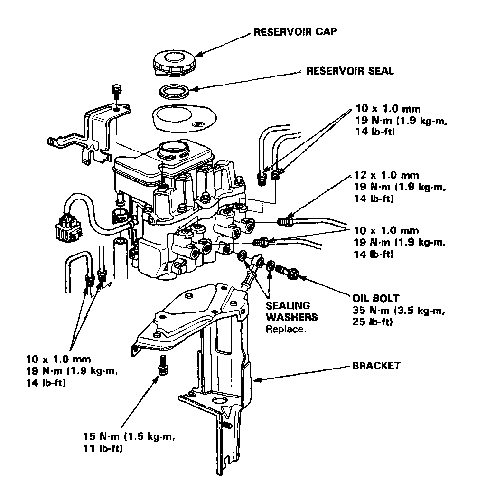

Hydraulic Control Assembly - Antilock Brakes

Modulator Unit Index/Torque
CAUTION:
- Be careful not to bend or damage the brake pipes when removing the modulator unit.
- Do not spill brake fluid on the car; it may damage the paint; if brake fluid does contact the paint, wash it off immediately with water.
- To prevent spills. cover the hose joints with rags or shop towels.
- Before reassembling, check that all parts are free of dust and other foreign particles.
- Replace the modulator unit as an assembly if it is defective for any reason.
- Do not mix different brands of brake fluid as they may not be compatible.
- Do not reuse the drained fluid. Use only clean DOT 3 or 4 brake fluid.
- When connecting the brake pipes, make sure that there is no interference between the brake pipes and other parts.